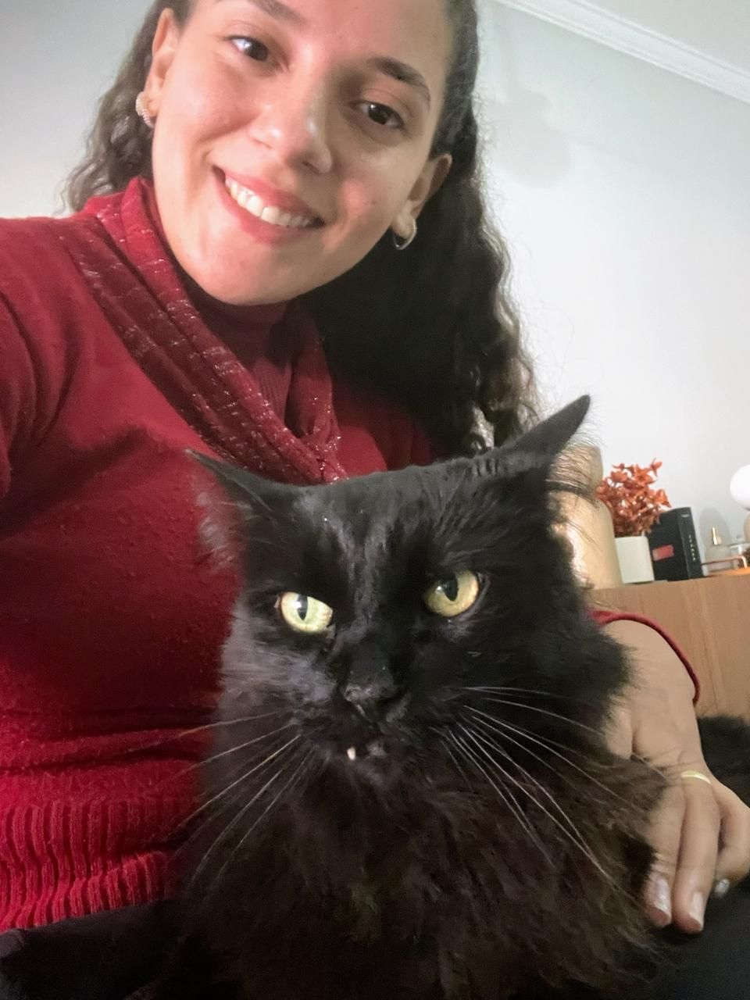

Visitas em domicílio
Vou até a sua casa em Araçatuba nos horários combinados para alimentar, dar água, medicação e carinho — sem o pet sair do conforto dele.
Visitas em domicílio e passeios para cães e gatos em Araçatuba-SP, com carinho, rotina e fotos para você ficar tranquilo. Para a hospedagem, seu pet vem para a casa da Amanda, em Birigui — dá para trazer sem preocupação.

Veja o que dá para fazer estando em Araçatuba-SP.
Vou até a sua casa em Araçatuba nos horários combinados para alimentar, dar água, medicação e carinho — sem o pet sair do conforto dele.
Saídas seguras em Araçatuba para seu cão se exercitar e gastar energia, no ritmo e porte dele, com fotos do passeio.
A hospedagem acontece na casa da Amanda, em Birigui-SP. Tutores de Araçatuba podem trazer o pet com tranquilidade para um ambiente familiar e fotos diárias.
Atendo visitas e passeios em Araçatuba-SP. A hospedagem é na casa da Amanda, em Birigui-SP (sede) — trazer o pet de Araçatuba para a hospedagem é super tranquilo.
Me conta as datas, o endereço e o porte do pet que eu retorno com valores e disponibilidade.